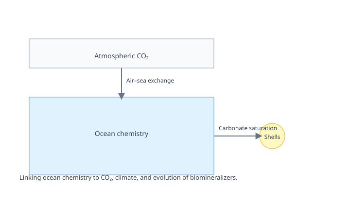

Seawater Chemistry, Climate, and Evolution
Ocean chemistry, atmospheric CO₂, and the biology that builds shells are tightly coupled over geologic time. I link secular changes in seawater Mg/Ca, Ca, and Sr to greenhouse–icehouse climate states and to transitions between aragonite and calcite seas.
- Connections: carbonate saturation, ocean pH, clay formation
- Co-author on the 2-billion-year surficial Mg cycle record (Xia et al. 2024)
- Constraints on the rise and decline of biomineralizing organisms
